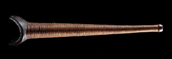
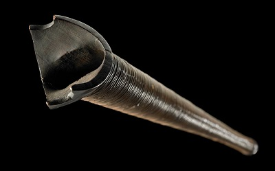

Pukaea (long trumpet)
Pukaea were typically used as loud, dramatic, signalling devices during war, but were also used on ceremonial occasions during times of peace. Like other wind instruments, pukaea belong to the family of Hineraukatauri (goddess of flutes), and deliver a strong, trumpeting, male sound.

Pukaea
- Length: 493mm
- Width: 92mm
- Depth: 88mm